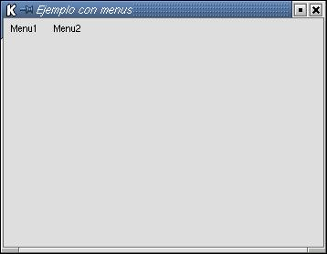

Una de los elementos comunes a casi todas las aplicaciones gráficas
son los menus. En Perl-GTK es relativamente sencillo añadir menus
a nuestras aplicaciones.
Tres son las clases con las que tendremos que trabajar para crear menus en nuestras aplicaciones
Gtk::MenuBar
| new Gtk::MenuBar() | Crea un nuevo objeto MenuBar |
| append ( child ) | Añade un widget child al final. Generalmente child es un Menu o un MenuItem |
| prepend ( child ) | Añade un widget child al principio. Generalmente child es un Menu o un MenuItem |
| insert( child , position ) | Inserta un widget en la posicion indicada |
| deactivate ( ) | Borra el MenuBar de la pantalla (lo desactiva) |
| select_item( child ) | Selecciona un widget hijo del MenuBar |
| activate_item( child ) | Activa un hijo |
Gtk::Menu
| new Gtk::Menu() | Crea un nuevo objeto Menu |
| append ( child ) | Añade un widget child al final. Generalmente child es un MenuItem |
| prepend ( child ) | Añade un widget child al principio. Generalmente child es un MenuItem |
| insert( child , position ) | Inserta un widget en la posicion indicada |
| deactivate ( ) | Borra el Menu de la pantalla (lo desactiva) |
| select_item( child ) | Selecciona un widget hijo del Menu |
| activate_item( child ) | Activa un hijo |
| set_title( title ) | Asocia un titulo con el Menu |
Gtk::MenuItem
| new Gtk::MenuItem()
new Gtk::MenuItem( label ) |
Crea un nuevo objeto MenuItem. Si se especifica label lo crea con esa etiqueta |
| select( ) | Selecciona el MenuItem |
| deselect( ) | Deselecciona el MenuItem |
| activate( ) | Activa el MenuItem |
| deactivate ( ) | Borra el Menu de la pantalla (lo desactiva) |
| set_submenu( submenu ) | Convierte el MenuItem en un submenu, que mostrará el menu submenu |
| remove_submenu( ) | Hace lo contrario de la anterior |
| right_justify ( ) | Coloca el MenuItem justificado a la derecha en un menubar. Se suele usar frecuentemente para los menus de ayuda |
Para ilustrar esto, vamos a hacer una aplicación que conste de una ventana, con una barra de menus en la que hay dos menus con dos opciones en cada uno. Según la opción que se presione, se emite un mensaje en la terminal desde la que se arrancó el script.
El aspecto que presentará sera como el siguiente:

| #!/usr/bin/perl -w
use Gtk;
my $false = 0;
# Creamos la ventana principal
# Creamos la rejilla
my $menubar = new Gtk::MenuBar();
# Creamos el menu 1 con dos Items colgando de
él
# Creamos el menu 2 con dos Items colgando de
el
# Visualizamos los menus
# Añadimos la rejilla y visualizamos todo
main Gtk; |
 |
||
| Anterior | Home | Siguiente |